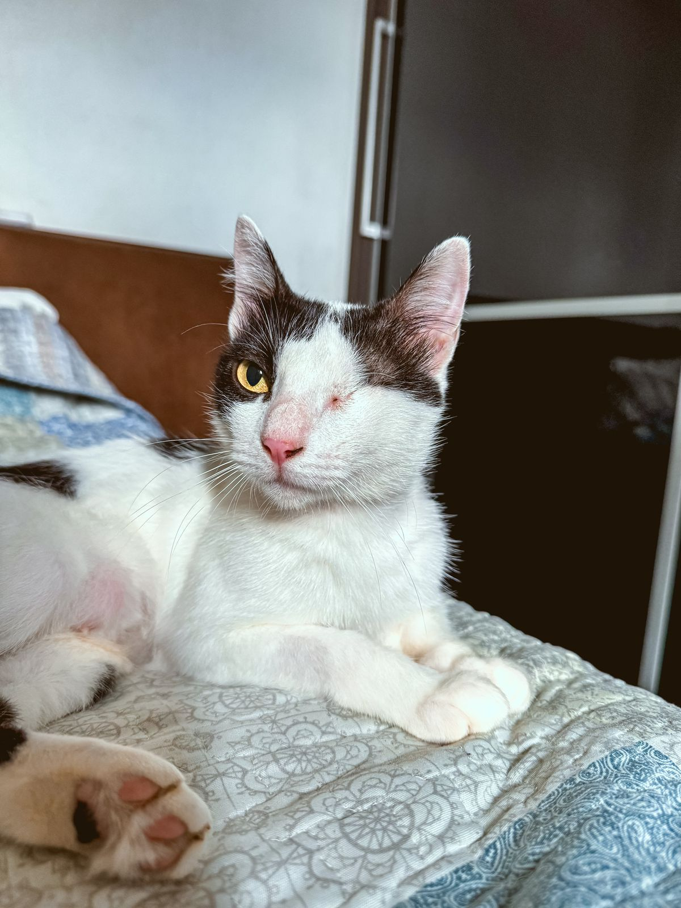

ANIMAIS
Gatos:

Difusor - macho, 6 meses, castrado e vacinado.
DESCRIÇÃO: Difusor é um gatinho macho, que foi encontrado em uma fábrica de peças automotivas (por isso o nome), chegou em estado caquético, com extrema magreza. Aos poucos foi se recuperando e hoje é um jovem 100% saudável e cheio de amor!

Luzia, fêmea, 2 anos. Castrada e vacinada - FELV +!
DESCRIÇÃO: Luzia chegou até nós através de um pedido de ajuda, onde a pessoa que pediu ajuda relatava que tinha um “monstro” em sua casa. Quando fomos resgatar, descobrimos que esse “monstro”, na verdade é uma linda princesa assustada e muito carinhosa!
Luzia é FELV + por isso precisa ser a única filha felina, ou ter outros irmãozinhos que também tenham FELV+.

Bartô - Macho, 3 meses, vacinado.
DESCRIÇÃO: Bartô foi resgatado junto com seus 4 irmãos e sua mamãe Angel. Estavam em situação de rua, e viviam em uma casa improvisada de plástico. Bartô foi o único que sobrou dos seus irmãos.
É um filhote com muito amor e energia!
Negativo para FIV e FELV.

Mimi - Fêmea, 1 ano. Castrada e Vacinada.
DESCRIÇÃO: Mimi foi abandonada em uma residência, viveu um tempo na rua até ser resgatada. É uma gatinha muito amorosa e carente!.
Negativa para FIV e FELV.
Cachorros


Cléo e Glória - ADOÇÃO CONJUNTA. - Fêmeas, castradas e vacinadas.
DESCRIÇÃO: Glória (mãe) e Cléo (filha), foram encontradas abandonadas na BR. São muito dóceis, amáveis e ativas, apesar da idade mais adulta, não apresentam problemas de saúde e são muito brincalhonas.
Precisam de um lar com muito amor, carinho e espaço, pois são duas cachorras grandes.

Branca, Fêmea - 2 anos. Castrada e Vacinada. Porte G.
DESCRIÇÃO: Branca foi retirada de maus tratos, era usada de forma indevida para caça. É muito dócil, querida e brincalhona, mas apresenta um certo grau de medo.
Precisa de um lar com muito amor, carinho e paciência.

Maia, 1 ano, Castrada e Vacinada. Porte G.
DESCRIÇÃO: Maia foi encontrada junto com sua irmã, Mavie, abandonada em Brusque.
Foram resgatadas e agora Maia precisa de um lar com muito espaço, amor e carinho. É super carinhosa e protetora!

Mavie, 1 ano, Castrada e Vacinada. Porte G.
DESCRIÇÃO: Mavie foi encontrada junto com sua irmã, Maia, abandonada em Brusque.
Foram resgatadas e agora Mavie precisa de um lar com muito espaço, amor e carinho. É super carinhosa e protetora!

Luma, 3 anos - Castrada e Vacinada, Porte G.
DESCRIÇÃO: Luma vivia nas ruas com seu irmão Juca. Ele foi adotado, mas ela ainda segue esperando seu tão sonhado lar.
Luma é puro amor e calmaria! Precisa de um lar com muito amor e carinho.